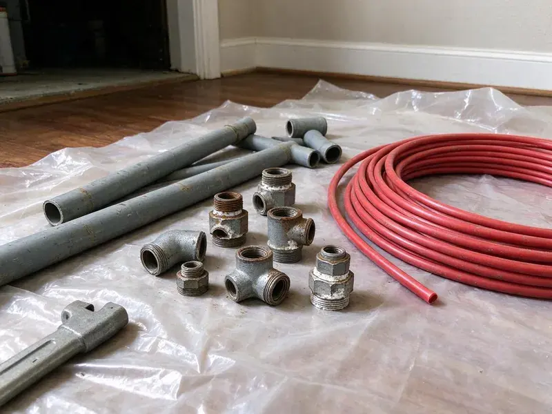

Water Line Replacement in Sterling, AK
We replace leaking and corroded water service lines across Sterling, AK with trenching and trenchless methods that protect your landscaping.
- Trenchless Pull Options
- Expert Alaska Plumbers
- PEX and Type K Copper
- Fast Service Available

Reliable Water Line Replacement Services in Sterling, AK.
Don't let a damaged water line disrupt your daily life. Contact CKN Plumbing for fast and professional service.
Your Go-To for Water Line Replacement in Sterling, AK
CKN Plumbing replaces the underground service line that carries water from your meter to your house. We use electronic leak detection to verify the problem, then install new PEX or copper pipe sized to restore full pressure and flow.
Our expertise includes:
- Main Water Service Upgrades
- Galvanized and polybutylene main line replacement with PEX or copper
- Long-Lasting Copper and PEX Solutions

Additional Plumbing Replacement Services in Sterling, AK
When repairs are no longer enough, our replacement services in Sterling, AK deliver durable upgrades that restore full performance.


Customers
Why Choose CKN Plumbing for Water Line Replacement in Sterling, AK?
A failing water line can lead to serious water waste, foundation damage, and health risks. Permafrost in colder parts of Alaska complicates any buried plumbing, and thawing ground can cause settling that cracks pipes. Choosing CKN Plumbing for your water line replacement means investing in a long-term solution built for the ground your pipe sits in.
- Quality Materials, We use only top-quality, corrosion-resistant materials like copper and PEX, ensuring your new water line will last for decades.
- Local Expertise, Our team knows the unique challenges of plumbing in Sterling, from shifting soils to fluctuating temperatures that can impact buried pipes.
- Advanced Techniques, Our team is skilled in both traditional trenching and less invasive trenchless replacement methods, reducing disruption.
Citywide Coverage
CKN Plumbing serves every neighborhood and surrounding community of Sterling, offering prompt water line replacement services. We understand that a major plumbing issue like this can't wait, so our teams are dispatched efficiently across the entire Sterling area.
Experienced Team
Our plumbing technicians are well trained and extensively experienced in all aspects of water line replacement. They undergo ongoing training on the latest techniques and materials to provide the most effective solutions for your home.
Safety-First Approach
We take every precaution to protect your property and our crew during water line replacement. From proper utility locates to careful backfilling, CKN Plumbing guarantees a safe and compliant process, giving you peace of mind.
Trusted Certified Sterling Plumbing Services Professionals
At CKN Plumbing, we take pride in providing certified plumbing services throughout Sterling, AK. Backed by recognized industry credentials, our experienced plumbers combine technical skill with genuine customer care. Whether it is repair, installation, or maintenance, we follow strict safety and quality standards to deliver lasting results you can trust.
Call Us Now PHCC Plumbing Contractor Recognition
PHCC Plumbing Contractor Recognition Better Business Bureau (BBB) Accreditation
Better Business Bureau (BBB) Accreditation Angi Certified Pro
Angi Certified Pro ISO 9001 Quality Management Certification
ISO 9001 Quality Management CertificationDependable Water Line Replacement Services in Sterling, AK
Commercial Water Service Replacement in Sterling
Commercial properties often have larger service lines and backflow assemblies. We replace commercial water lines and work with the utility when needed. We schedule work to limit disruption to tenants and customers. Backflow devices are tested and certified. We handle permits and inspections.

Water Line Materials and Brands in Sterling, AK
We work with a range of high-quality materials and trusted brands for water line replacement across Sterling, AK. This includes durable copper tubing from manufacturers like Mueller Industries, flexible PEX piping from major brands such as Uponor and Viega, and high-grade PVC for specific applications where appropriate. Our selection ensures your new water line is built to last, providing reliable water flow and meeting all local standards for potable water delivery.
Pressure Regulator and Shutoff Upgrades in Sterling, AK
Many homes have high street pressure that can stress pipes and fixtures. We install pressure reducing valves set to a safe range. We also replace old gate valves with full-port ball valves at the house. This makes it easier to shut off water in an emergency. These upgrades safeguard your plumbing system.
Water Line Upgrades and Code Compliance in Sterling, AK
Beyond simple replacement, we also offer water line upgrades to improve water flow or ensure compliance with current plumbing codes. Older homes in Sterling might have undersized or outdated galvanized steel pipes that choke flow and cause rust-colored water. We can replace these with larger diameter copper or PEX lines, bringing your system up to modern standards and improving overall water pressure and clarity.
Damage Assessment and Replacement in Sterling
Diagnosing the exact cause and extent of water line damage is essential before replacement. Our technicians use advanced leak detection equipment and camera inspections to pinpoint issues like tree root intrusion, pipe corrosion, or ground shifting. For properties in Sterling, especially those with older foundations or heavy tree growth, accurate assessment ensures we recommend the most fitting and effective replacement strategy.
Copper Water Line Installation in Sterling
Copper has long been a preferred material for water lines due to its durability, corrosion resistance, and longevity. CKN Plumbing specializes in installing new copper water lines, known for their ability to withstand high water pressure and resist bacterial growth. While a higher upfront investment, copper provides a dependable and long-lasting water supply system, a great choice for many homes in Sterling, AK.
Emergency Water Line Repair and Replacement in Sterling, AK
A major water line break can flood your yard or leave you without water. Call (928) 470-9007 for emergency service. We locate the break and make temporary repairs if needed. Then we plan a lasting replacement. Fast response limits damage.

Polybutylene Water Line Replacement in Sterling, AK
Polybutylene pipe was used in some homes built in the 1980s and 1990s. It can become brittle and fail with no warning. Many insurers flag it as a risk. We replace polybutylene service lines with modern materials. This reduces the chance of sudden leaks.
Water Line Replacement Near Me in Sterling, AK
When you search for 'water line replacement near me' in Sterling, AK, CKN Plumbing is your go-to local expert. We have strong ties in the community and a strong understanding of the local infrastructure and common plumbing issues affecting homes in this area. Our prompt service means we can rapidly dispatch a team to your location, often providing same-day assessments for urgent situations.
Local plumbers understand the soil and typical service line layouts in Sterling. We plan replacements to limit damage and restore your yard. Call us for a clear estimate.
CKN Plumbing at a Glance
- Fully licensed plumbing team covering Sterling, AK
- 24/7 emergency service with same-day scheduling
- Upfront, flat-rate pricing before work begins
- 4.9-star rated by 309+ Alaska customers
Sterling Map
Sterling Information
- Population
- 5,918
- Area codes
- Local
- Service area
- Sterling and communities within 40 miles
- Nearby
- Kenai, Kalifornsky, Homer, Anchorage
Rocky soil, shifting ground and aging galvanized pipe make underground service lines prone to failure in Sterling, AK, so prompt water line replacement protects pressure and property.
Expert Services
Trust our professionals for reliable CKN Plumbing solutions in Sterling, AK.
Our Specialized Plumbing Services in Sterling, AK
At CKN Plumbing, we provide a complete range of plumbing services across Sterling, AK. From leak detection to full system installations, our team ensures fast, precise, and affordable service for both residential and commercial properties. Explore our core services below:


How Our Water Line Replacement Process Works in Sterling, AK
Our water line replacement process is designed to be as simple and efficient as possible, minimizing disruption to your home and property.
Request a Quote
Contact CKN Plumbing at (928) 470-9007 to schedule an initial inspection. We will evaluate your water line issue and provide a detailed, upfront quote for replacement.
Site Assessment
Our technicians will conduct a thorough site assessment, locating your water line, identifying the damage, and determining the best replacement method for your property in Sterling.
Permitting & Prep
We handle all necessary permitting with Sterling authorities. Our team then prepares the site, ensuring safety and readiness for the replacement work.
Frequently Asked Questions About Water Line Replacement in Sterling
The cost of water line replacement in Sterling, AK can vary widely, typically ranging from $2,500 to $8,000 for residential properties. Factors influencing the price include the length of the line, the chosen material (copper, PEX), the method of replacement (trenchless vs. excavation), and the complexity of the excavation. We provide a detailed, upfront estimate after a complete inspection.
Water line replacement is a complex job that requires professional equipment, knowledge of plumbing codes, and excavation experience. It's strongly recommended to hire a licensed professional like CKN Plumbing. Improper installation can lead to leaks, contamination, and costly property damage, and may not pass inspection in Sterling.
Most residential replacements take one to two days. Bigger properties may take longer.
Permafrost in colder parts of Alaska complicates any buried plumbing, and thawing ground can cause settling that cracks pipes. Shifting ground puts real stress on underground pipes, often leading to cracks and breaks. In addition, tree roots seeking water can steadily penetrate and damage water lines over time, common issues we address in Sterling, AK.
It requires trenching, proper materials and code knowledge. Mistakes can cause leaks or hit utilities.
Yes, a permit is usually required for main water line replacement projects in Sterling. This ensures the work complies with local building and plumbing codes. CKN Plumbing handles all necessary permitting and inspections, making sure your new water line installation is fully compliant.
We primarily use high-quality copper and PEX (cross-linked polyethylene) for main water line replacements due to their durability and long lifespan. Specific material choice depends on factors like soil conditions in Sterling, water chemistry, and your budget. We work with well-known brands like Mueller Industries for copper and Uponor or Viega for PEX.
Low pressure, rusty water, wet spots in the yard and high water bills are common signs. Frequent leaks also indicate the line is failing.
What People Are Saying About Our Plumbing Experts?

James P.
Our commercial plumbing system had a leak under the sink, and CKN Plumbing handled it professionally. The plumbers arrived quickly and restored everything without disruption to our customers.
Commercial Plumbing · Anchorage, AK
Sofia M.
Two new toilets installed in one visit, no mess left behind, and the tech even adjusted a faucet he noticed was dripping. Fair pricing and really friendly.
Toilet Installation · Homer, AK
Daniel K.
A pipe burst at 11 pm and they actually answered. The plumber showed up within the hour, shut everything down, and had us back to normal the next morning. Could not ask for more.
Emergency Plumbing · Wasilla, AKRobert G.
The trenchless sewer replacement saved our front yard. They walked us through the camera inspection footage first so we knew exactly what we were paying for.
Sewer Line Replacement · Sterling, AK
Mark T.
When our office needed drain cleaning, CKN Plumbing provided quick, reliable service. The plumber arrived on time and made sure every drain flowed perfectly before leaving. Very satisfied.
Drain Cleaning · Kenai, AK
Emily R.
I called CKN Plumbing for plumbing repair, and the technician was fast, polite, and thorough. They explained the problem clearly and fixed it the same day. I will definitely hire them again. Highly recommended!
Plumbing Repair · Knik-Fairview, AK